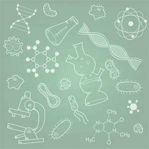
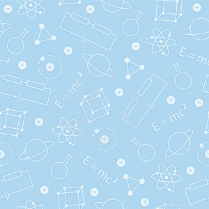

Azərbaycan Xalq Komissarları Sovetinin qərarına əsasən, 1938-ci il aprel ayının 14-də Gəncə şəhərində Nadejda Krupskaya adına 2 illik Müəllimlər İnstitutun əsası qoyulmuşdur. 1939-cu ildə İnstitutun ilk iki ixtisası Təbiət və Fizika-riyaziyyat ixtisasları fəaliyyət göstərmiş, daha sonra isə iki şöbə Tarix, Azərbaycan dili və ədəbiyyat şöbələri də fəaliyyətə başlamışdır. 01 sentyabr 1943-cü ildən etibarən 2 illik Müəllimlər İnstitutu ləğv olunur, həmin təhsil ocağı yenidən qurularaq onun bazasında tam ali təhsil verən, ümumtəhsil məktəbləri üçün müxtəlif fənlərdən yüksək ixtisaslı müəllim kadrları hazırlayan dördillik Kirovabad (Gəncə) Dövlət Pedaqoji İnstitutu yaradılır. 1943-cü ildə İnstitut görkəmli maarifçi, 1875-ci ildə ilk qəzetin banisi Həsən Bəy Zərdabinin şərəfinə onun adı ilə adlandırılmışdır. 2000-ci il iyun ayının 13-də Azərbaycan Respublikası Prezidentinin sərəncamına əsasən İnstitutun profili genişləndirilmiş və Gəncə Dövlət Universiteti adlandırılmışdır.


Kimya-Biologiya
Riyaziyyat-İnformatika

Fizika və Texniki fənlər
Pedaqoji
Tarix-Coğrafiya
Xarici Dillər
İqtisadiyyat-İdarəetmə
Filologiya
Qiyabi şöbə
Magistratura
Tələbə Ombudsmanı